一条流水线，两种世界
左侧导航可跳转：上面是 图像→3D（生成图 / TripoSR / DUSt3R / 3DGS）， 下面是 世界模型（DIAMOND · IRIS · Classic · RSSM）在 Kaggle T4 上跑通后的产物预览。
// image → 3d
generate · mesh · point cloud · gaussian00 文生图 · 多视角
产物：主物体 hero_000 与 front / side / back / three-quarter / top。
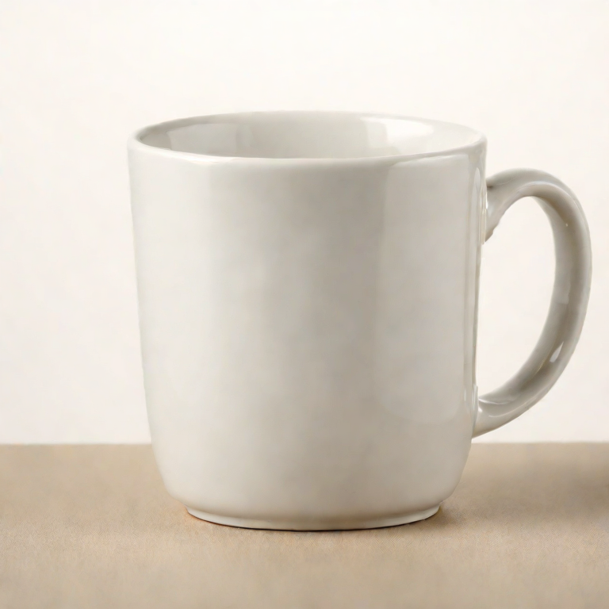
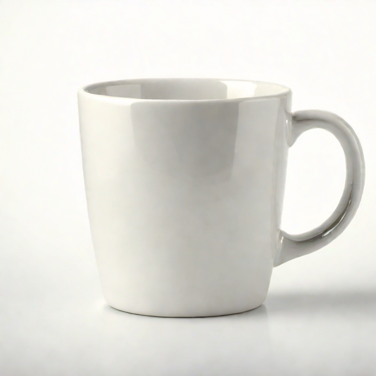
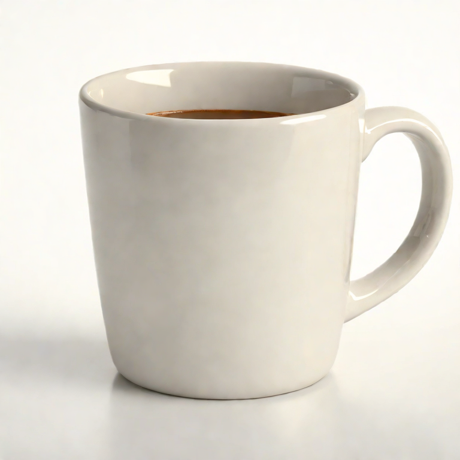
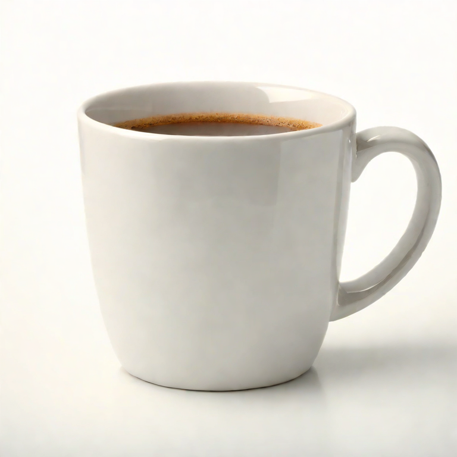
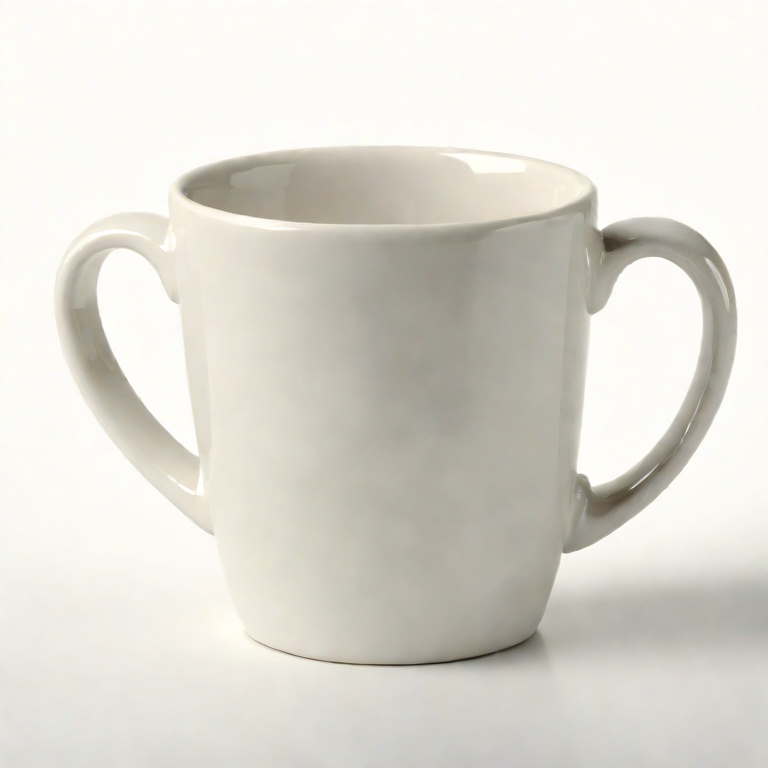
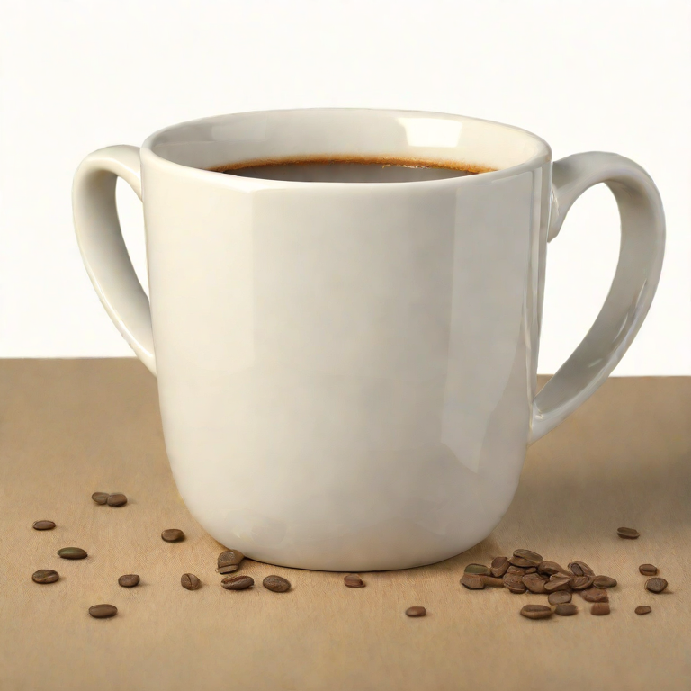
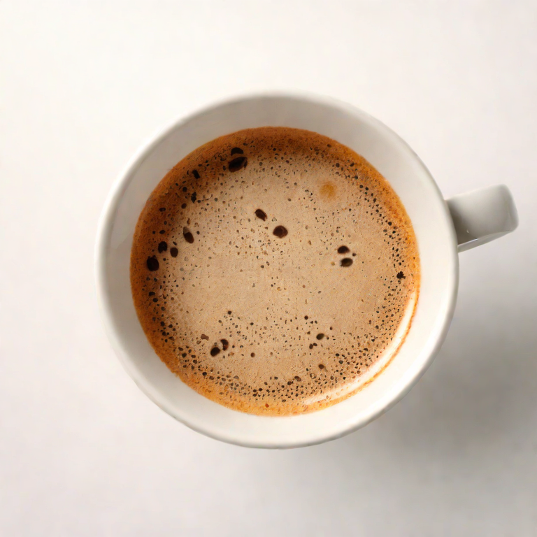
01 单图 → Mesh · TripoSR
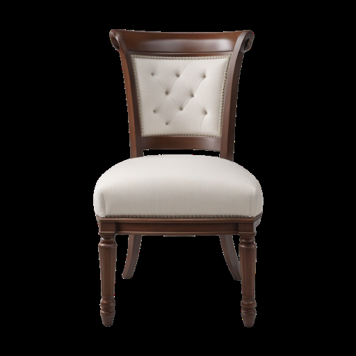
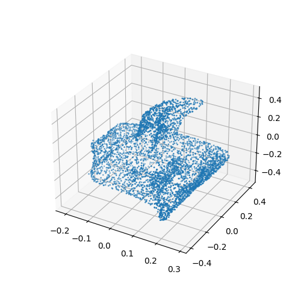
drag · scroll · mesh.obj
02 多视角 → 点云 · DUSt3R
本轮输入为合成视角（未挂 00 作 source）；几何为真实 DUSt3R 对齐结果。
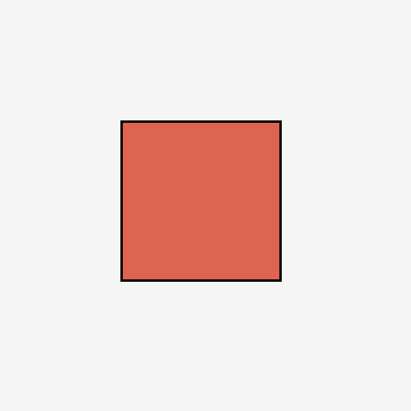
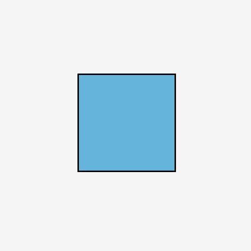
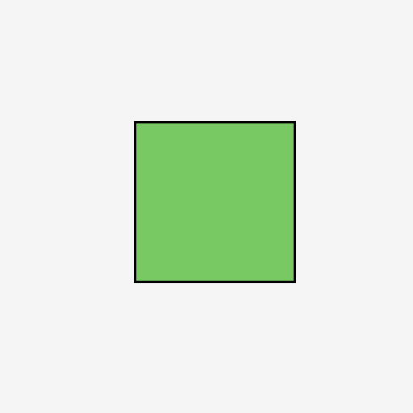
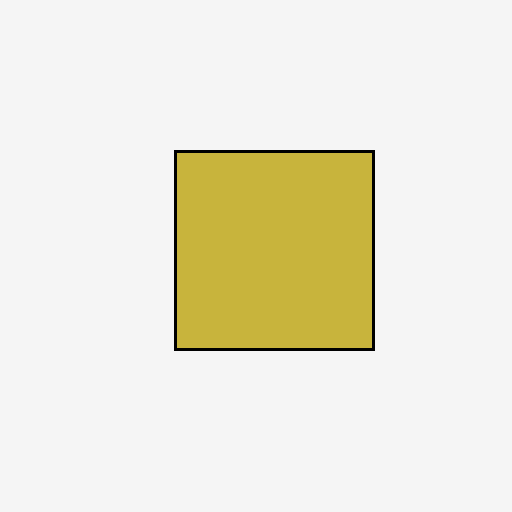
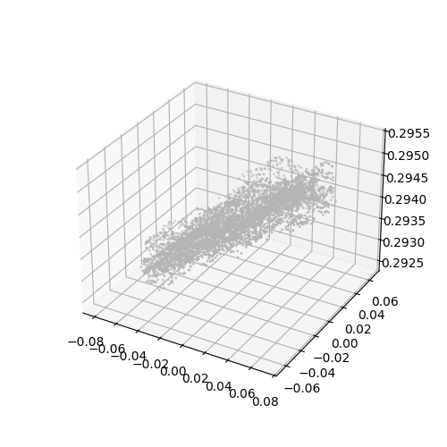
color point cloud
03 简化 3DGS
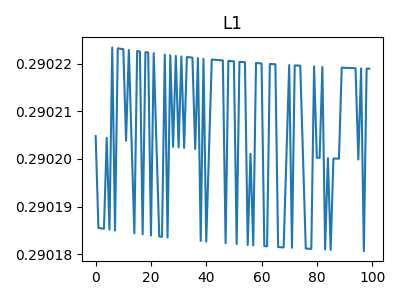
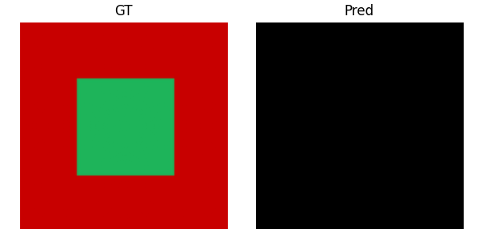
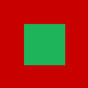
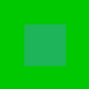
gaussian centers
// world models
dream rollouts on Kaggle T4WM-01 DIAMOND · Diffusion World Model
真正的扩散世界模型 open-loop dream，不是环境录像。
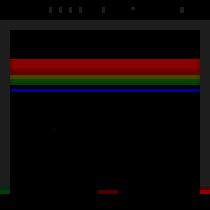
GAMEBreakout
DREAM STEPS60
FRAMES61
COLLECT200 real
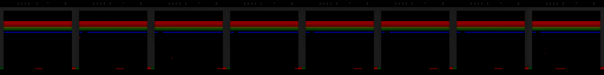
WM-02 IRIS · Transformer World Model
ALE 注册 + 绕过 hydra 后，从真实第一帧启动 tokenizer→Transformer 想象。
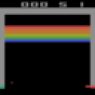
GAMEBreakout
DREAM STEPS80
FRAMES82
REWARD Σ~2.0
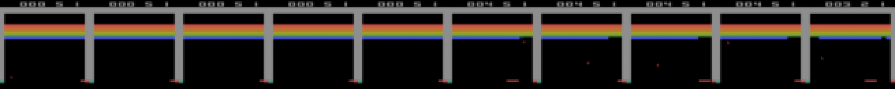
WM-03 Classic World Models
VAE loss 0.073→0.010 · M loss 0.316→0.192 · 教学向完整闭环。
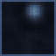
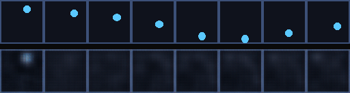
WM-04 RSSM · Dreamer-lite
loss 0.19→0.026 · KL 0.058→0.001 · Dreamer 骨架可训验证。